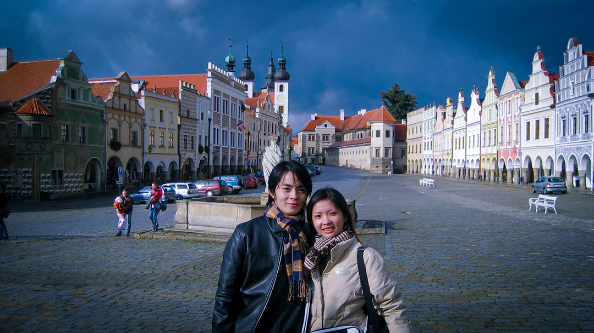
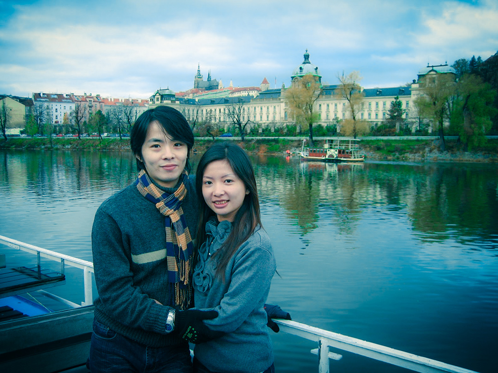
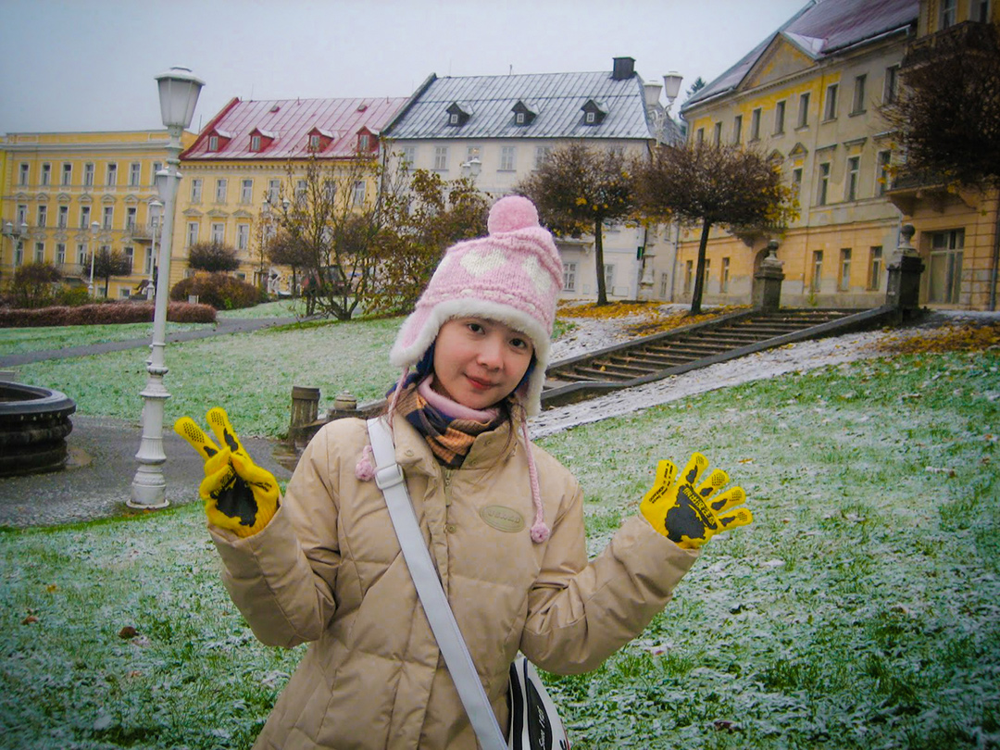

-
新婚蜜月旅行
在生命最不順遂的階段，
我們做了最好的決定。
把幾乎僅存的積蓄換成兩張機票，
飛向一座像是被時間溫柔保存的國度。
石板路與紅瓦屋頂鋪展成序曲；
清晨天未亮，我們已在舊城廣場就位，
等哥德尖塔被第一束金光點亮。
天文鐘滴答、查理大橋風起，伏爾塔瓦河邊的擁抱，讓浪漫有了具體溫度。
庫倫洛夫把童話直接搬上斷崖與河彎；帖契的彩色屋排排站，像把童年的色鉛筆倒進了廣場。
西線轉進溫泉帶，卡羅維瓦利與瑪麗安斯凱以迴廊展開療癒：我們學當地人拿起杯子「喝溫泉」，那股酸澀帶鐵鏽味的溫熱，印象深刻；廣場忽然飄雪的那一刻，是我們人生第一次親眼見到下雪，薄白鋪在草地與帽耳上，世界被白色點綴的像幅畫。
啤酒寫下另一段記憶：在皮爾森釀酒廠冰涼的地窖裡，啤酒把胸口點亮；而布拉格城堡、聖維特主教座堂、黃金巷 22 號、瓦茨拉夫廣場，則把歷史的年輪一圈圈疊上旅人的腳步。
至今回想，依舊沉醉在布拉格的浪漫氣息~
很慶幸在最需要勇氣的時候，選擇了彼此；在最美的風景裡，練習相愛，也就此愛上歐洲。
# 超愛歐洲老城區與石板路
# 特地為這次旅行畫了紀念徽章
# 紅色的五瓣玫瑰－紅瓦小鎮庫倫洛夫
-
FB 撰寫日期:2021.04.01
還記得那天，1996年4月1日，
上天對我們開了個玩笑。
然後我們就一起笑著到現在 :)# 笑著笑著就幸福了
# 一起笑看人生
# 邁向26年
# 庫倫洛夫老城區的小巷內
- 
彩色房子排排站，童話降臨。
# 捷克 Telč 帖契舊城廣場
-
# 布拉格廣場

# 天文鐘
- 
伏爾塔瓦河風好涼，抱緊處理。
# 布拉格 伏爾塔瓦河遊船
-
經典查理大橋合照，解鎖！
# 布拉格 查理大橋與舊城橋塔
-
查理大橋很有FU，浪漫滿分。
# 布拉格 查理大橋

貼臉自拍，哥德尖塔陪襯。
# 捷克 布拉格｜布拉格城堡・聖維特主教座堂
-
遇見巴洛克群像，來張到此一遊。
# 捷克 Karlovy Vary 聖三柱像
-
摸摸聖約翰銅牌，願望就能實現。
# 布拉格 查理大橋 聖約翰銅牌
-
Aqua Marina門口，準備暖暖身。
# Karlovy Vary Aqua Marina（溫泉區）
-
金色迴廊前，準備嘗試喝溫泉。
# Mariánské Lázně 歌唱噴泉與溫泉迴廊
-
拱廊一路延伸，散步變伸展台。
# Mariánské Lázně 溫泉長廊
-
溫泉柱直衝屋頂，我們只負責驚呼。
# 卡羅維瓦利 Vřídlo 溫泉回廊
-
酒窖比空氣冷，啤酒卻讓心發熱。
# 皮爾森 Pilsner Urquell 釀酒廠地窖
-
捷克旅遊影片－不小心切到錄影模式 # 當年不太會拍影片，不小心切到錄影的片段，現在看來特別珍惜
-

薄雪鋪草地，帽耳也跟著撒嬌。
# 瑪麗安斯凱（Mariánské Lázně）公園
-
雨後哥德閃金光，好壯麗！
# 布拉格城堡．聖維特主教座堂
-
被古城堡包圍的擁抱。
# 布拉格．火藥塔
-
公主抱闖老城，路人都笑了。
# 布拉格．火藥塔
-
在教堂中~彩繪玻璃灑滿星光。
# 聖維特主教座堂．內部
-
莫札特也會來買紀念品嗎？
# 布拉格老城．莫札特之家
-
小鎮河畔輕風，心也變軟。
# 庫倫洛夫．伏爾塔瓦河畔
-

在查理大橋與風對話。
# 布拉格．查理大橋
-
走在捷克時尚大道上！
# 布拉格．瓦茨拉夫廣場
-
傳說中的22號，童話等你。
# 布拉格城堡．黃金巷 No.22
-
屋頂像積木，怎麼看都可愛。
# 庫倫洛夫城堡．觀景台
-
蜿蜒石板路，轉角都是風景。
# 捷克·Český Krumlov·老城小巷
-
陽光好刺眼，查理大橋更耀眼。
# 捷克 布拉格｜伏爾塔瓦河・查理大橋
-
戴著「熊出沒」手套逛童話小鎮。
# 捷克 庫倫洛夫（Český Krumlov）｜小橋與城堡塔
-
把滿城紅屋頂，一把收進視野！
# 捷克 布拉格｜舊市政廳塔（舊城區高塔）
-
與城堡衛兵同框，儀式感滿滿。
# 捷克 布拉格｜布拉格城堡 衛兵崗亭
-
跟提恩教堂打招呼，時光倒流了。
# 捷克 布拉格｜舊城廣場・提恩教堂

# 天都沒亮就相約拍美照
-
夜色橋塔作證，親一個更暖。
# 捷克 布拉格｜查理大橋 舊城橋塔
-

夜色下的查理大橋，被我們包場。
# 捷克 布拉格｜查理大橋 夜景
-
城堡塔映河光，童話就在身旁。
# 捷克 Český Krumlov｜城堡塔與伏爾塔瓦河畔
-
剛出爐的溫泉餅，甜在掌心裡。
# 捷克 Karlovy Vary Kolonada｜溫泉餅店
-
河風輕拂，寧靜小鎮慢慢走。
# 捷克 Třeboň｜老城河畔
-
金色門廊前，優雅打卡。
# 捷克 Karlovy Vary｜Grandhotel Pupp Café
-
雨天也擋不住蜜月團的熱情浪漫!
# 捷克 卡羅維瓦利｜溫泉迴廊（Vridlo Colonnade）